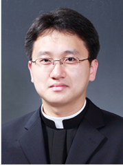
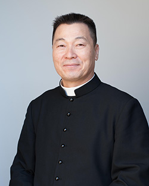
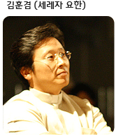

이번 달 첫 금요일 성시간 안내
사랑하는 예수성심 천주교 커네티컷 성당 신자 여러분, 주님 안에서 평안하신지요? 이번 달 첫 금요일, 주님과의 깊은 만남을 위한 성시간에 여러분을 초대합니다. 성시간은 매월 첫 금요일 오후 8시에 시작됩니다...
더 보기예수성심 천주교 커네티컷 성당은 하느님의 사랑과 은총을 나누며 함께 성장하는 공동체입니다. 모든 분들을 환영하며, 그리스도의 가르침 안에서 사랑과 평화를 실천하고 있습니다. 믿음의 여정을 함께 걸어갈 여러분을 기다립니다.
저희 성당은 커네티컷 웨덜스 필드에 위치하고 있으며, 지역 사회에 봉사하고 복음을 전파하는 일에 힘쓰고 있습니다.
제11대 주임 신부
재임 기간: 2022년 4월 ~ 현재
제10대 주임 신부
재임 기간: 2017년 11월 ~ 2022년 2월
제9대 주임 신부
재임 기간: 2013년 2월 ~ 2017년 10월
제8대 주임 신부
재임 기간: 2008년 3월 ~ 2013년 2월
제7대 주임 신부
재임 기간: 2005년 ~ 2008년 3월
제6대 주임 신부
재임 기간: 2002년 8월 ~ 2004년 3월
제5대 주임 신부
재임 기간: 1999년 8월 ~ 2002년 8월
제4대 주임 신부
재임 기간: 1997년 ~ 1999년 8월
제3대 주임 신부
재임 기간: 1994년 4월 ~ 1996년 4월
제2대 주임 신부
재임 기간: 1994년 ~ (종료일 미상)
제1대 주임 신부
재임 기간: 1992년 8월 4일 ~ 1994년
기타: 웨스트 헤이븐 한인 천주교회 소속
오전 10시 30분
오후 8시 00분
매월 첫 금요일 오후 8시 00분
미사 시작 전 20분
항시 가능
3월, 6월, 9월, 12월 첫째 주일 (사무실 문의)
예약 후 방문
항시 가능
사무실 문의
사랑하는 예수성심 천주교 커네티컷 성당 신자 여러분, 주님 안에서 평안하신지요? 이번 달 첫 금요일, 주님과의 깊은 만남을 위한 성시간에 여러분을 초대합니다. 성시간은 매월 첫 금요일 오후 8시에 시작됩니다...
더 보기사랑과 믿음으로 하나 된 예수성심 천주교 커네티컷 성당 공동체의 소중한 순간들을 담은 사진 갤러리입니다. 주일미사, 특별 전례, 신자분들의 교제와 나눔, 그리고 다양한 교회 활동 속에서 함께 웃고 기도하며 성장하는 우리의 모습을 만나보세요...
더 보기오전 10시 30분
미사 시작 20분 전
수요미사: 오후 8시 00분
매월 첫 금요일 오후 8시 00분
3월, 6월, 9월, 12월 첫째 주일
"내가 너희에게 새 계명을 준다. 서로 사랑하여라. 내가 너희를 사랑한 것처럼 너희도 서로 사랑하여라." (요한 13,34)
주소: 커네티컷 웨덜스 필드
전화: 860-529-1456
휴대폰: 860-519-4650
세상 곳곳에서 고통받는 이들을 위하여, 우리 공동체의 모든 지체들의 영육 간 건강과 평화를 위하여 기도합니다.